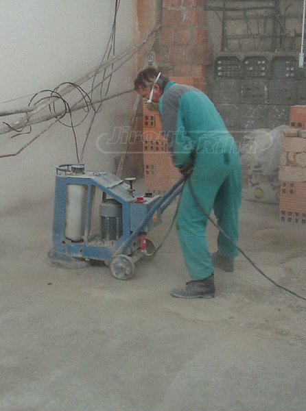

Broušení průmyslových podlah
Chcete vrátit podlahám ztracenou krásu nebo odstranit nerovnosti? Využijte našich profesionálních služeb broušení podlah za pomocí špičkových strojů. Ty dokážou odstranit různé nátěry či lepidla a skvěle přebrousí žulové či terasové dlažby. Broušení podlah dodá každé podlaze nový šmrnc. Neváhejte a přesvědčte se sami!
Vypracujeme vám cenovou nabídku a vhodný postup broušení podlah zdarma. Kontaktujte nás!
Naši zkušení pracovníci zajistí kvalitní broušení podlah elektrickou bruskou s horizontální brusnou deskou průměru 300 mm, která je osazena diamantovými segmenty nebo kamenivem. Broušení lze provést buď za sucha s odsáváním prachu nebo za mokra. Vždy můžete očekávát precizně odvedenou práci, jejiž výsledkem je dokonale renovovaná podlaha.
Broušení podlah vrátí původní vzhled každé podlaze!
Na co je broušení podlah vhodné?
- přednátěrové broušení betonových povrchů - odstranění cementového šlemu
- vyrovnání povrchu - odstranění nerovností
- odstranění starých nátěrů, lepidel dlažby
- zarovnání nerovností v okolí dilatačních spar
- přebroušení žulové, kameninové nebo terasové dlažby
Máme dlouholeté zkušenosti s broušením
Působíme na trhu více jak 20 let a za tu dobu máme mnoho spokojených zákazníků, ke kterým se můžete zařadit i vy. Použití moderních technologických postupů, vysoké úrovně odvedené práce a individuálního přístupu k zákazníkovi nás řadí mezi přední firmy ve východočeském regionu.
Obraťte se na nás a využijte výhodných cen broušení podlah.
Nasloucháme přáním a představám našich zákazníků a díky tomu jim můžeme nabídnout ty nejlepší služby. Máme pracovníky s dlouholetými zkušenostmi a s mnoha osvědčeními, kteří vám vždy navrhnou to nejvhodnější řešení. Věříme, že budete s našimi službami maximálně spokojeni.